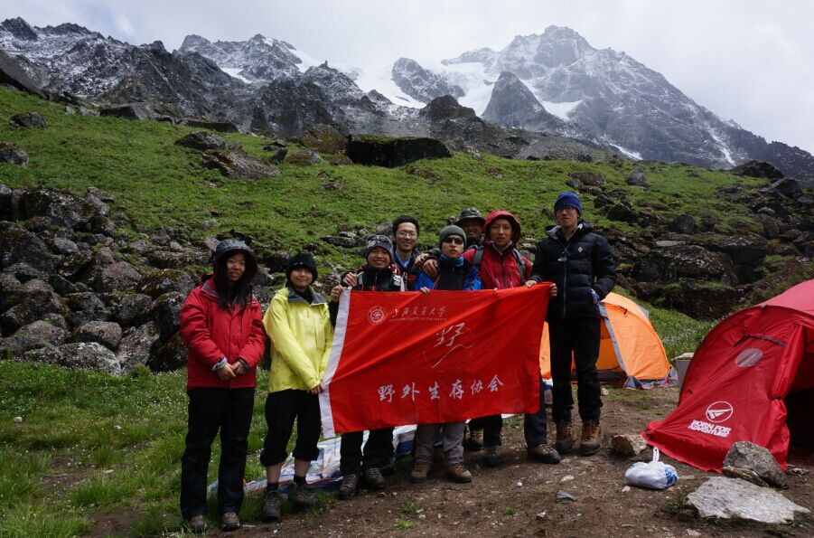

[转寄/推荐][转贴][删除][修改][设置可RE属性][上一篇][返回讨论区][下一篇][回文章][同主题列表][同主题阅读][从这里展开]
发信人: chenyingjun (jun6), 信区: outdoor
标 题: 上海交大野外生存协会2015年登山队登顶半脊峰
发信站: 饮水思源 (2015年07月29日00:03:36 星期三)
上海交通大学野外生存协会登山队于2015年7月18日成功登顶半脊峰，继去年之后第二
次登顶这座海拔5430的山峰。
此次半脊峰攀登，全程由队员自己运送物资，并且参与修路工作，相对于以往的登山
活动可以说有了全新的突破和体验，最终有半数以上队员登顶，这是野协登山队在登山活
动中迈出了坚实的一步。
此次登山活动的成功，首先感谢学校领导、姚武老师和家长对野协登山队的理解和支
持，其次感谢fenix、black ice、ropenet、中业宇通、singing rock和惊奇之旅所提供的
物资上的支持，最后感谢登山队全体队员的相互扶持与野协干事在背后默默无闻的帮助。
我们为什么去登山？因为山就在那里。这次半脊峰的攀登对野协登山队而言是一个崭
新的起点，未来还有更多的挑战等待着我们去克服。
山峰介绍：
半脊峰，海拔5430米，经102.907519, 纬31.221169，位于四川省阿坝藏族羌族自治州
理县毕棚沟旅游风景区深处。2004年5月4日，七位登山者成功登顶一座未登峰，依山顶的
形状首登者给它起名为半脊峰。
时间表：
7.14中午到达毕棚沟景区，搭乘景区巴士到达BC（3500米）。
7.15 全体队员从BC向C1（4450米）运送部分物资。下午到达C1后四名队员返回BC，四名队
员留宿C1。
7.16 留宿C1的队员向上进行适应性行走，并往冰川末端运输部分食物和技术装备。返回B
C的四名队员中，一名队员身体不适，提前下撤，余下三人将剩下的物资运送至C1。两个分
队在C1会合后进行了技术训练。
7.17 七名队员向C2出发，途中一名队员身体不适，由另一名队员护送下撤。与下五名队员
到达C2（5026米），在C2进行结组训练。
7.18 五名队员于早上4点半开始冲顶，经由R2路线于8点40左右登顶半脊峰（5430米）。
关于上海交通大学野外生存协会：
上海交通大学野外生存协会成立于2002年10月，协会成立以来，荣获上海市优秀社团
，交大十佳社团，中登协第六届德清登山越野挑战赛专业组第一名，北大山鹰全国大学生
户外技能挑战赛三等奖等等。
我们组织同学们参加的户外运动包括山野徒步旅行、攀岩、定向等。背上背包，抛开
学业的烦恼，远离尘世的喧嚣，用脚步丈量地图；在岩壁上接触时尚、挑战自我；在大自
然怀跑中奔跑，在阳光下挥洒汗水。
 screen.width - 200){this.width = screen.width - 200}">
|
[转寄/推荐][转贴][删除][修改][设置可RE属性][上一篇][返回讨论区][下一篇][回文章][同主题列表][同主题阅读][从这里展开]